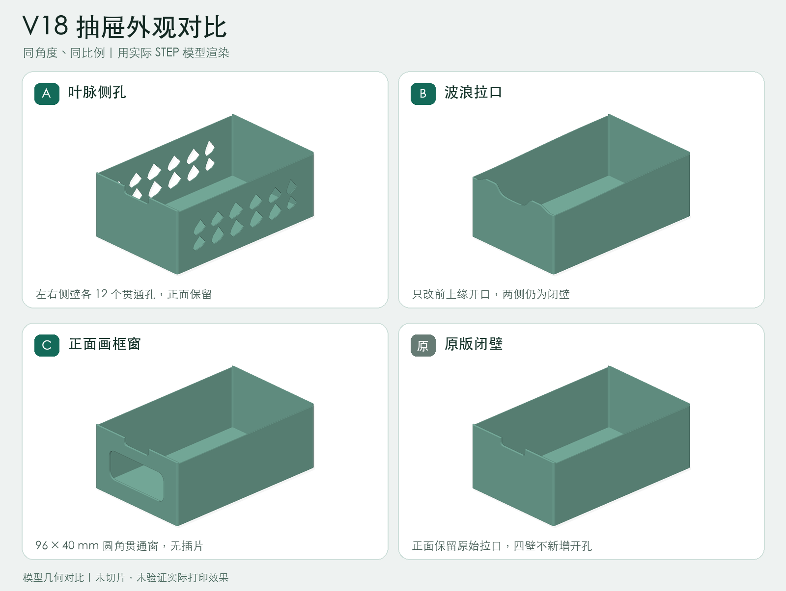

A 双侧叶脉
两侧各 12 孔；设计窗内约 34% 开孔，前脸不改。
下载 A · STEPV18 附加件 · 已出 STEP · 未切片
都基于原 V18 素面抽屉，仅对抽屉局部去料，外包络同为 144.10 × 230 × 86 mm。三案各一件，任选其一；原素面托盘、框架、导轨、限位及原 3MF 不变。

两侧各 12 孔；设计窗内约 34% 开孔，前脸不改。
下载 A · STEP握口宽约 66.1 mm、深约 13 mm；侧壁不开孔。
下载 B · STEP保留原 U 握口，另开 96 × 40 mm、R10 前窗。
下载 C · STEPC 平底摆放时，窗上缘有约 76 mm 的水平跨度，未验证免支撑。三案仅做 CAD 回读及保护区检查，未切片、试印或测载荷。首次先空屉试装试抽；装小物可继续用原素面版。